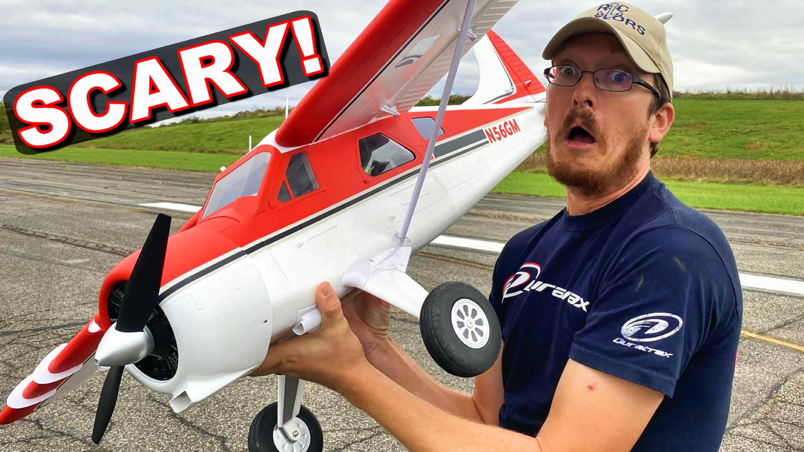
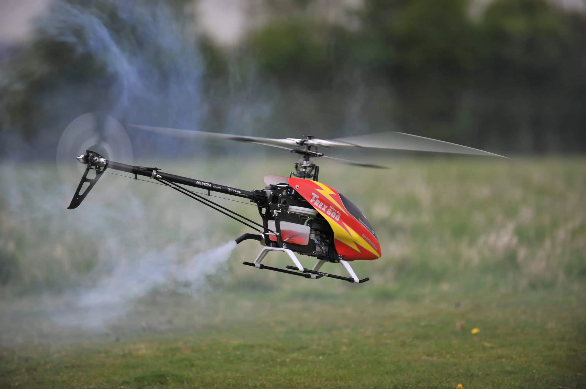

Once you have the necessary equipment, you can finally decide what to fly.
Planes are easier to learn and fly compared to helicopters. They both have distint thrills and enjoyment so I built both planes and helicopters.
When you are new to the hobby, it is best to start with a cheap, trainer plane model. Once you develop some skills and experience you can move to expensive & complex models.
-
RC Planes
- RC planes are usually sold as kits, which means that you need to assemble many parts.
- Kits do not include electronics, so you would need to choose and order a receiver, servos for control surfaces, motor or engine and several other equipment to wire them up.
- It takes patience and requires experience to build planes. You may watch youtube videos or get help from your frields when building your first plane!
-
RC Helicopters
- Helicopters are also sold as unassembled kits.
- They are extremely dangerous due to high speed rotating blades. So, you should carefully follow the assembly manual and get help from friends for its initial setup.
- RC helicopters can fly upside down, do very complex maneuvers and offer ultimate thrill and enjoyment
- You must buy lots of spare parts because once you crash, it is almost impossible to repair broken parts and you need to replace them with new ones!